Plans live in one app, timers in another, and the record of what actually happened nowhere. So a day's plan and a day's work never meet, and nobody can say where the hours went.

Case study · own product · design + build
NineFlow
Plan better, flow forward.
Outcome A planner, a focus timer and a work log in one app, designed and built solo, shipped on web, Windows, Mac and Android from one React codebase that works offline.
- My role
- Solo design + build
- Timeline
- 2025 – now in active use
- Platforms
- 4 web · Windows · Mac · Android
- Built with
- React Tailwind · Electron · Capacitor
- Status
- Live works offline
The plan and the work never met.
One planner where moving a task to Working starts its timer, and every change to a task is kept. The plan is the work log.
- 01See today in one look
- 02Add work in plain words
- 03Lose nothing, even offline
Twenty people, one planner.
I walked through the app as 20 different people, from a first-time visitor to a night-shift nurse and a screen-reader user, and wrote down what got in each one's way, in the order they'd hit it. Then I ranked the fixes by how many people each one helps.
20user types walked through
14fixes, ranked by reach
12shipped so far
First-time visitor
In the wayHad to make an account before seeing anything, then landed on a dashboard of zeros.
FixTry it as a guest, on sample data kept only in this browser.
ShippedExam aspirant
In the wayThe study plan was fixed to one person's dates, and its progress was missing from backups.
FixA "Prepare for an exam" goal; the plan is built back from your exam date and exported with everything else.
ShippedNight-shift worker
In the wayA workday from 22:00 to 06:00 counted as zero hours.
FixAn end time before the start means the next morning, and the load bar runs across midnight.
ShippedLow-vision user
In the wayText as small as 10 px, and a month heatmap that showed load by colour alone.
FixA Text size setting, a 12 px floor, numbers in every heatmap cell and a match-system theme.
ShippedKeyboard power user
In the way"⌘K to add a task" didn't add a task, and there was no list of shortcuts.
FixN for a new task, ? for shortcuts, and a Matrix you can drive with the arrow keys.
ShippedHindi or Tamil speaker
In the wayEvery word on screen is in English.
FixMove all strings into one dictionary first, then add Hindi.
NextThree shapes, one letter.

- N for NineFlowRead together, the shapes draw an N. Read alone, each one says something about the app.
- The ribbon is the flowOne unbroken band from top left to bottom right: the day moving forward, task by task, with no hard corners.
- The play shape is the startThe dark form on the left points right like a play button: press start, and the focus timer runs.
- The dot is youA person standing on the flow, a step ahead of it, and the focus point the whole app is built around.
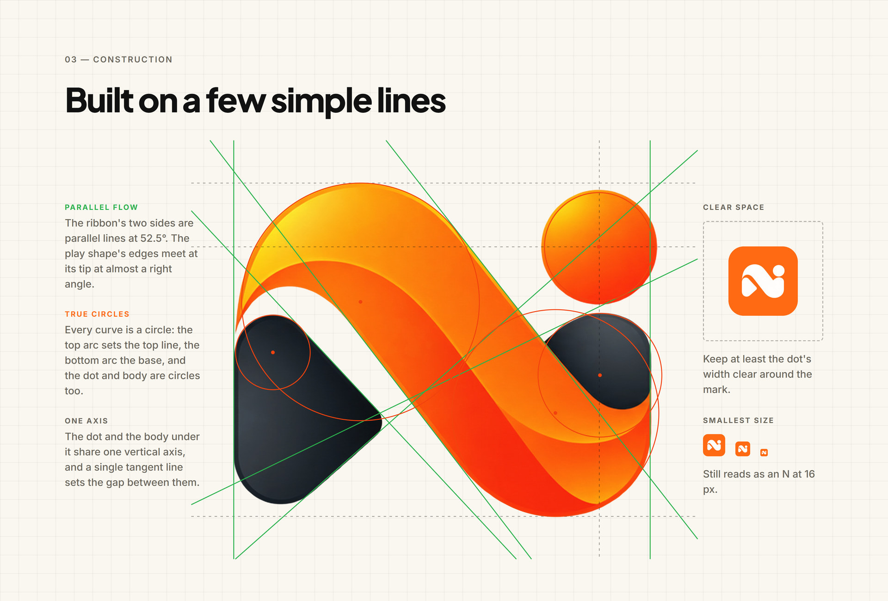

Warm orange on cream.
A sunrise gradient for the moments that matter, cream and sand for calm working surfaces, and warm greys instead of pure black after dark.
Sun
#FF9F1CNineFlow orange
#FF6A13Ember
#F2420EDeep orange
#BA4500Cream
#FAF7F0Peach
#FFECE0Ink
#111111Night
#1A1917Sunrise → Ember
135° · #FF9F1C → #FF6A13 → #F2420EInter
One family for the wordmark and the whole app. Tabular figures keep timers and hours from jumping as they count.
Today's load 7h 05m of 8h · finish ≈ 19:34
Designed for the next five minutes, and the next five weeks.
One look at today
The load bar compares planned hours with the working day, so an over-full day shows before it starts.
Add in plain words
"Call the bank tomorrow 3pm !high" fills in the day, time and priority. Speak tasks, or paste messy notes.
Nothing gets lost
Works offline, carries unfinished work forward, and keeps a history of every change on every task.
Today, at a glance.
The first screen answers three questions before anything else: what's left, how long it takes, and when you'll finish.
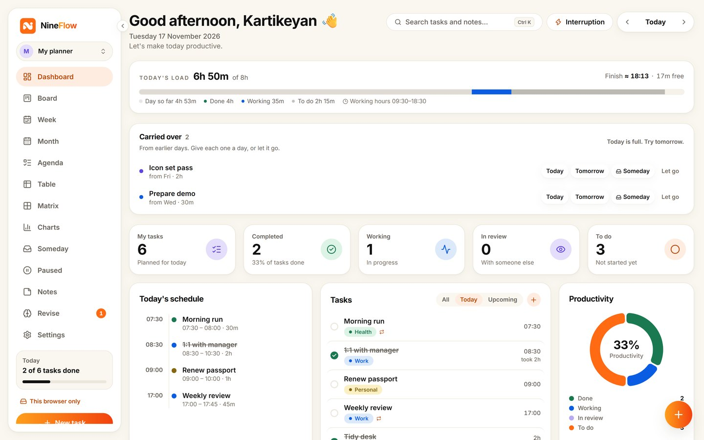
Today's load
Planned hours against your working hours. Over-full days turn orange and offer to move the lowest-priority task to tomorrow.
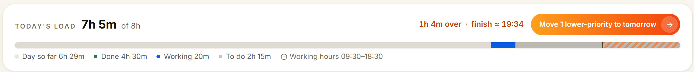
Carried over
Unfinished work from earlier days waits here. Give each one a day, or let it go, instead of silently piling up.
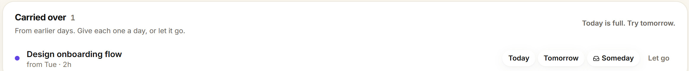
Schedule and counts
A time-blocked schedule next to five counts: planned, completed, working, in review and to do.
The same tasks, seen eight ways.
Every view reads the same list, so a change made in one shows in all of them.
Small features that save the day.
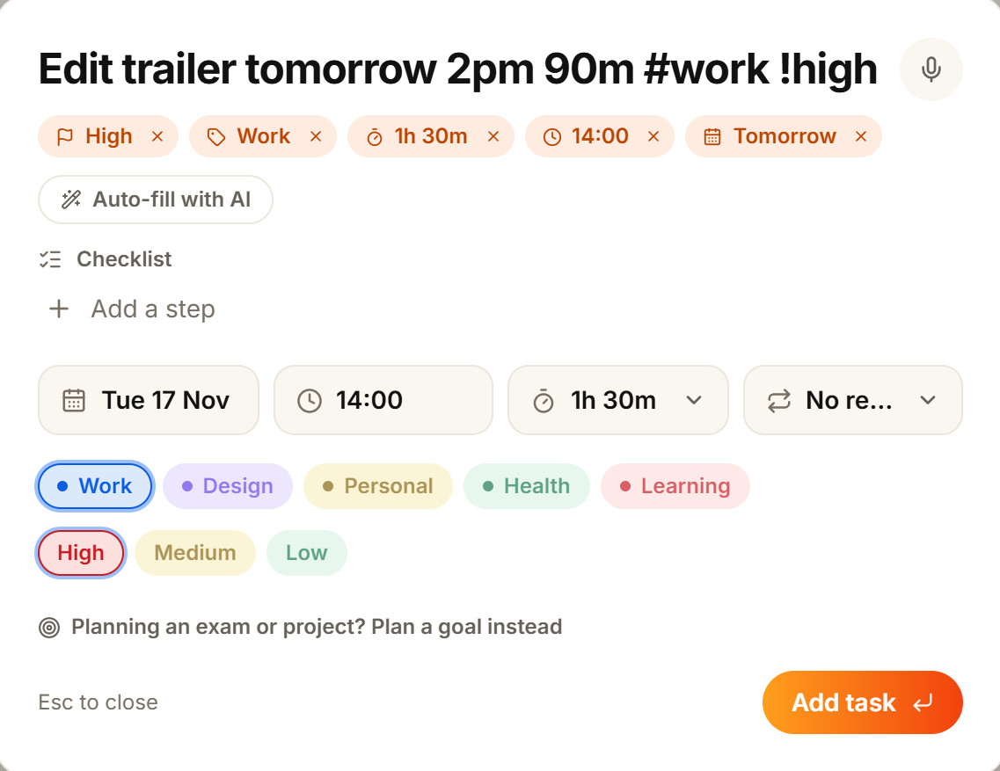
Type it
"Edit trailer tomorrow 2pm 90m #work !high" becomes a scheduled task.
views from one set of tasks
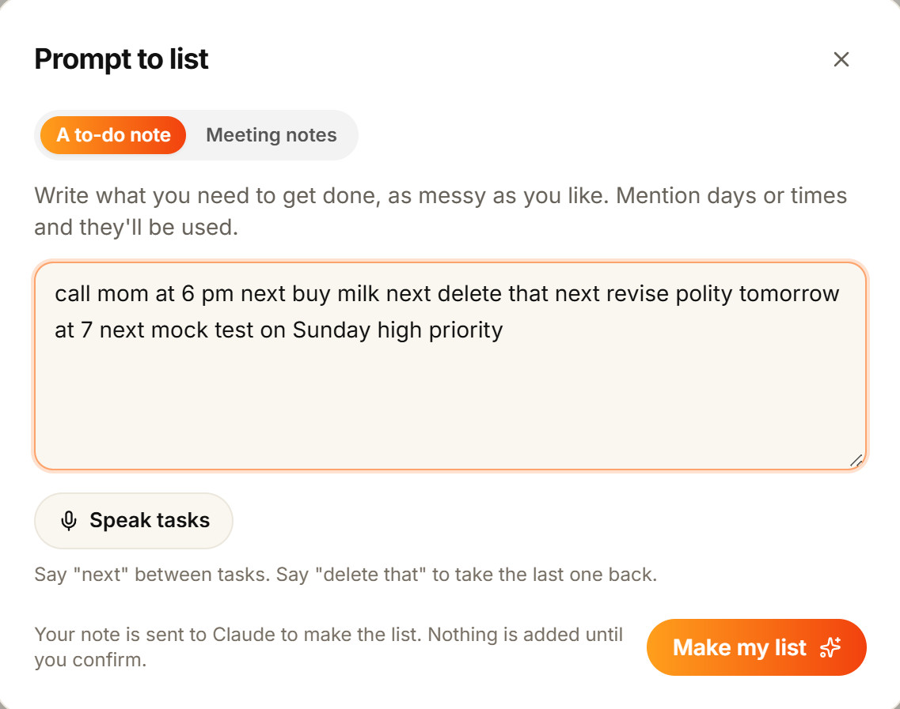
Say it
Speak several tasks at once; "delete that" works while you talk.
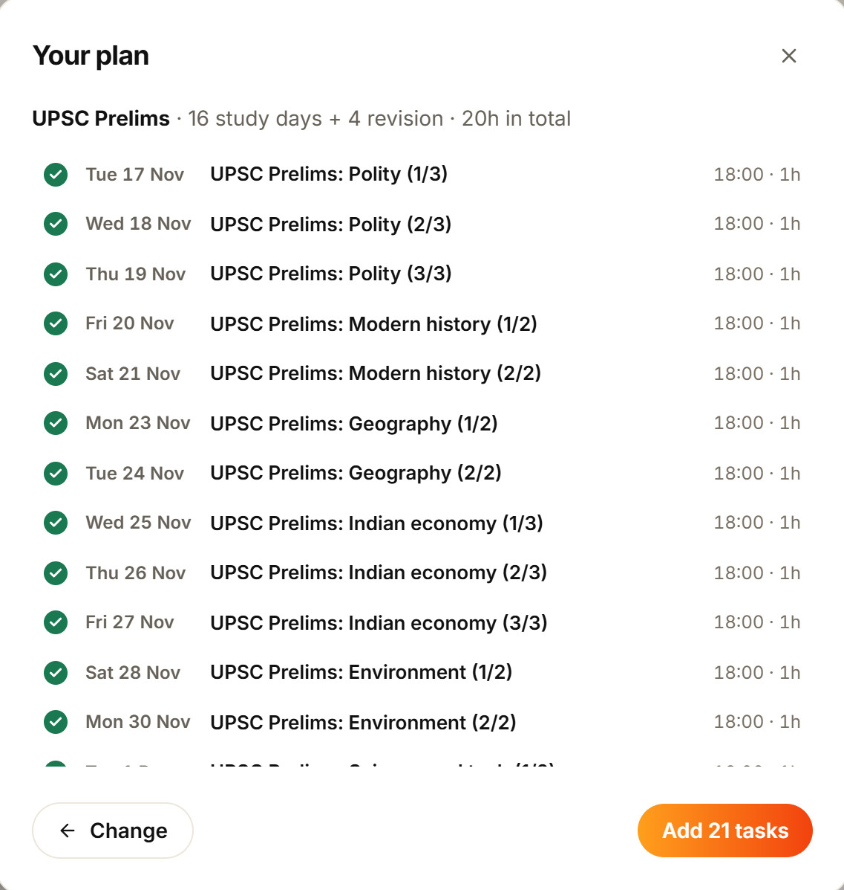
Plan a goal
An exam in 24 days? Every free evening gets a topic, revision comes last.
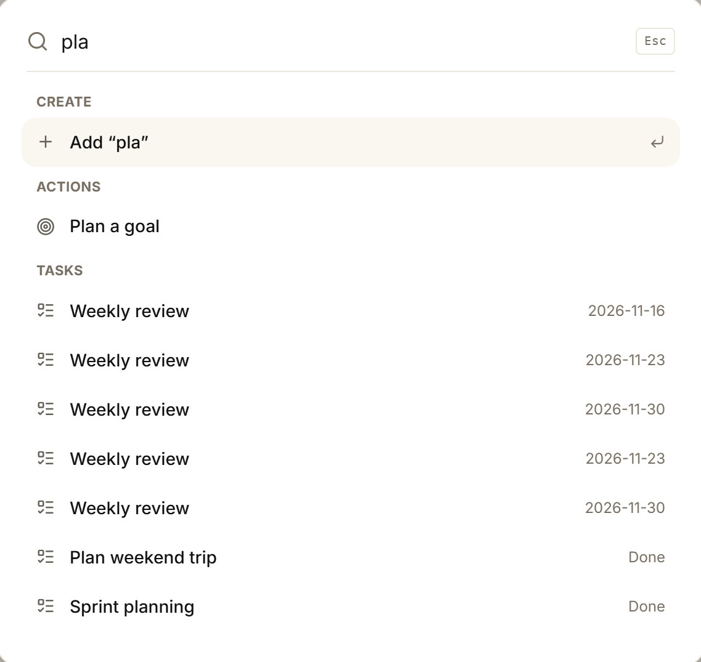
Ctrl + K
Any action or task, two keys away.

Focus
A Pomodoro timer that logs real time on the task.
sign-ups needed: try it as a guest
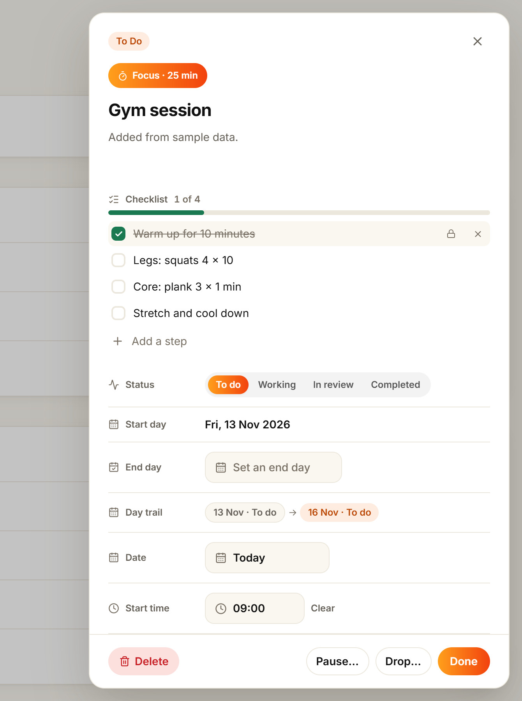
Finish properly
A checklist and a short "done?" check before a task closes.
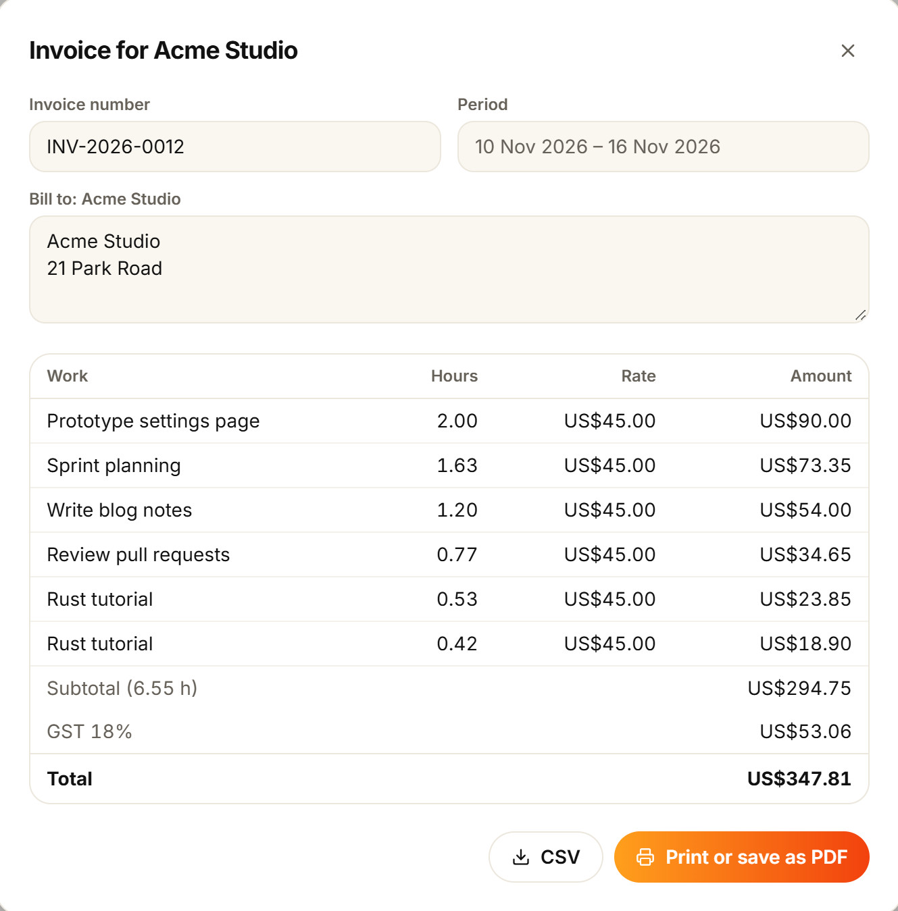
Hours to invoice
Billable time by client turns into a ready invoice.
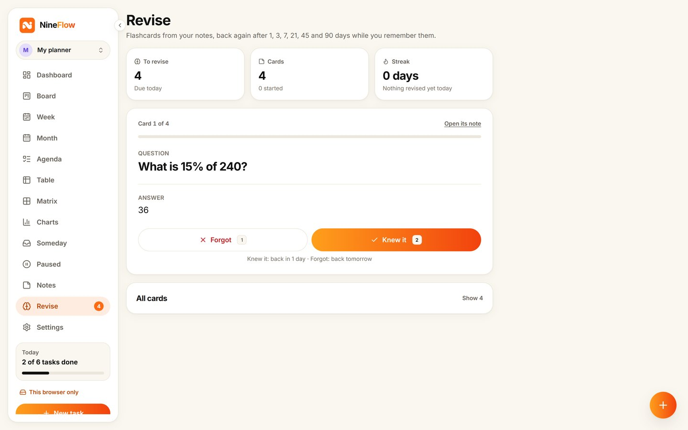
Notes become flashcards
Write "question :: answer" in any note; Revise brings it back after 1, 3, 7, 21, 45 and 90 days.
usable offline, synced when back
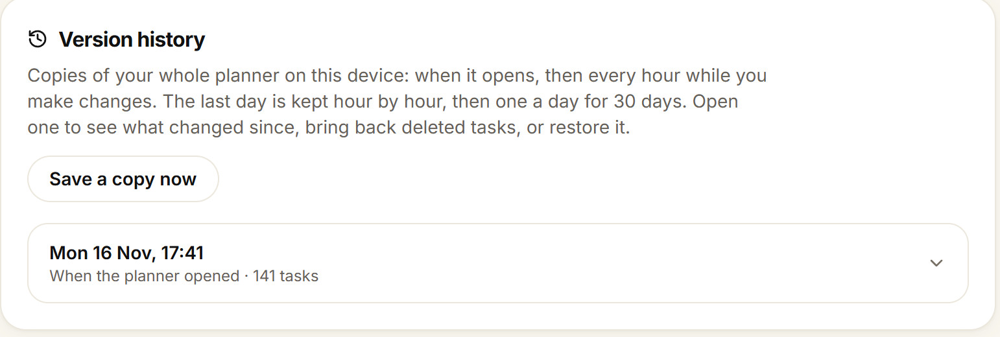
Nothing lost
Version history with restore, and several separate planners.
Made for one hand.
The Android app is the same planner, laid out for a thumb: Home, Board, Week and Month in a bottom bar, everything else one tap away.
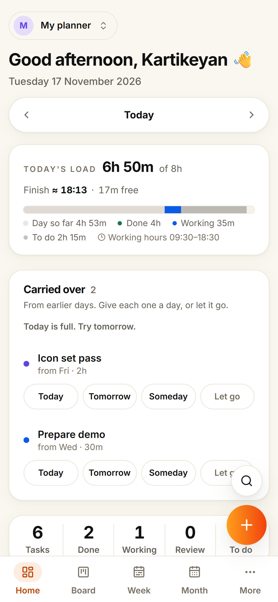


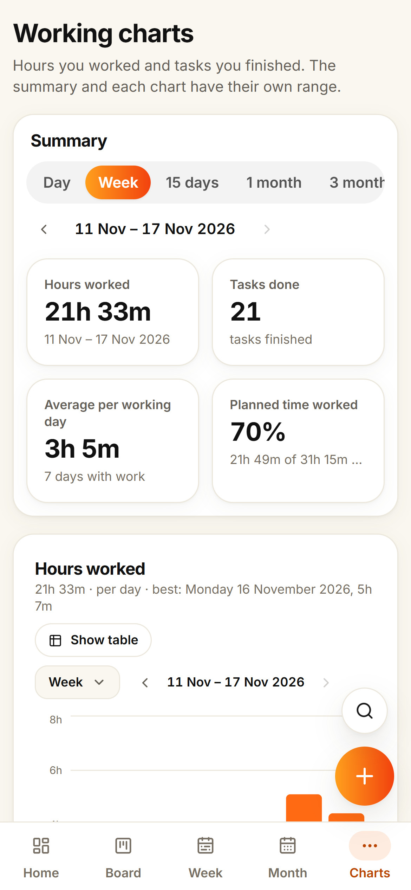
Easy on the eyes after dark.
Warm greys instead of pure black, and the same orange, so the brand looks the same day and night. Four more colour themes for people who want their own.

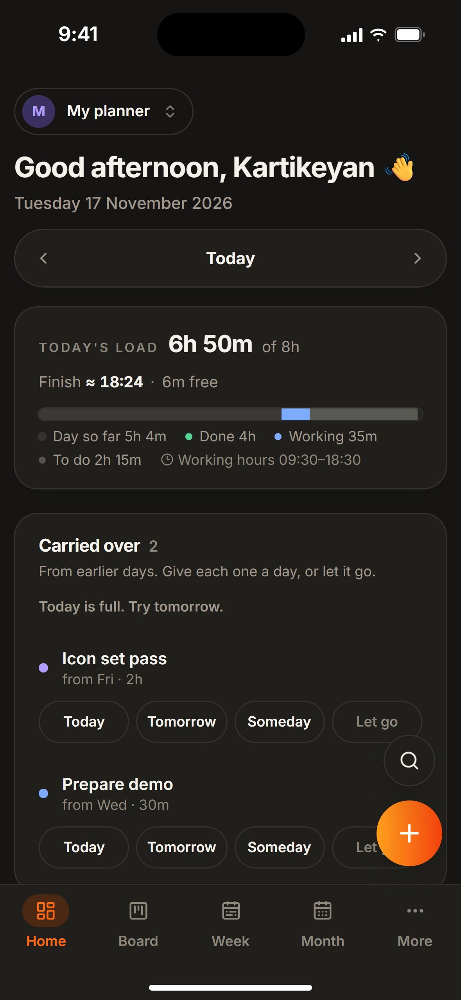
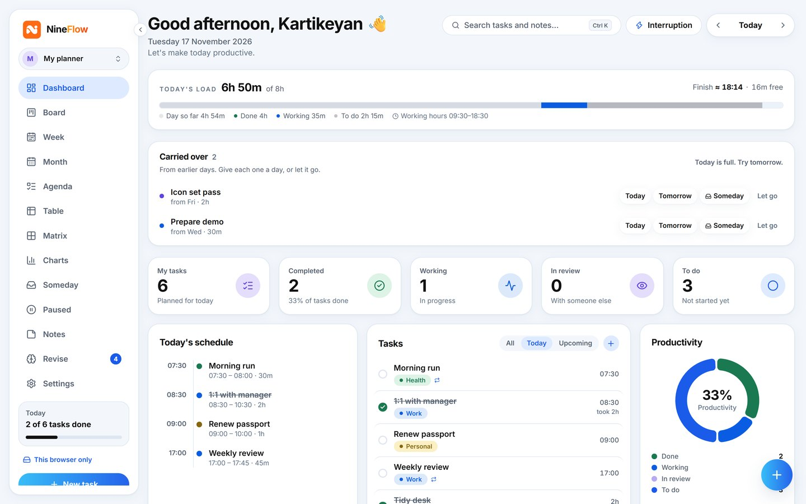
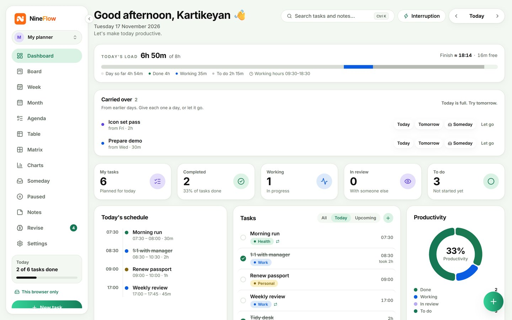

One codebase, four platforms.
I designed it and built it: the same React app runs in the browser, wraps into a desktop app with Electron and into Android with Capacitor.
1codebase
4platforms
195commits
- App
- React 18, Vite, Tailwind CSS, date-fns, Recharts, dnd-kit
- Desktop
- Electron, a signed Windows installer and a macOS build
- Android
- Capacitor, with native speech recognition and local notifications
- Sync
- Google Drive (your own), or email accounts with Supabase
- AI
- Prompt to list and Ask NineFlow, through Claude on serverless functions
- Testing
- Playwright end-to-end tests on desktop and phone, unit tests for the parsers
Still on the list.
Hindi, then more
Move every string into one dictionary, then add Hindi for the Indian users the audit found.
Quiet Google reconnect
Refresh the Google sign-in in the background, so the reconnect banner only shows when it truly fails.
Delete account
A one-step way to remove an email account and all its data, which needs a small server call.